ToDo
Zeitplan
ZugSt. Johann in Tirol → Wien Hütteldorf
- 05:49 St. Johann Bstg. 2, S 8 (5010) → Wörgl an 06:38
- 06:47 Wörgl Bstg. 3, WESTbahn WB 79213 → Wien Hütteldorf an 10:44, Bstg. 4
Laut Kalender.
AutoDaniel Zednik holt dich in Hütteldorf ab → Schlosspark Mauerbach · 10 km
Knapp für 11:10.
verpasstVormittag Track Automation & AI — nur zur Einordnung
Zug kommt erst 10:44. Was vorher lief, kann im Panel aufkommen:
09:05 · INTERVIEW: KI-Reality-Check – Zwischenbilanz aus der Unternehmenspraxis · 14:45 Co-Moderation Open Panel
Alin Kalam (Central European Tech Leadership Institute & TU Wien)
Wer:
- Academic Director, Central European Tech Leadership Institute & TU Wien (imh)
- Studium Informatik und Astrophysik (imh)
- 2018–2021 Lufthansa Group: Datenstrategie, Datenanalyse, Digitalisierung (imh)
- Zuvor BAWAG Group: „Big Data Officer – Digital Banking Executive“ (imh)
- Organisiert jährlich die Data Science Conference Austria & CEE; Bundesvorstand Junge Europäische Föderalisten (imh)
Spricht normalerweise über:
- Datenstrategie und Data Science in Großunternehmen (imh)
- Disruptive Technologien, FinTech, Start-up-Ökosystem (Talent Garden) (imh)
- Am 17.11.: Quick Wins, Blind Spots, Erfolgsfaktoren bei KI-Einführung (imh)
Für dich: Konzern-Biografie (Lufthansa, BAWAG) plus Start-up-Nähe: guter Sparringspartner im Panel für „groß vs. klein“.
Quellen: imh Forum IT – KI
09:05 · INTERVIEW: KI-Reality-Check – Zwischenbilanz aus der Unternehmenspraxis
Helene Baumgartner (AK Wien)
Wer:
- Expertin im Büro für digitale Agenden, AK Wien (imh)
- Studium Betriebswirtschaft in Graz (imh)
- Über 20 Jahre IT-Branche, Führungsrollen in mehreren Branchen (imh)
Spricht normalerweise über:
- Digitalisierung aus Perspektive der Arbeitnehmer:innen (imh)
- Weitere Thesen: nicht gefunden
Für dich: Mögliche Reibung: Arbeitnehmerperspektive vs. Unternehmertum; Anknüpfung, wenn KI den Einzelnen statt den Konzern stärkt.
Quellen: imh Forum IT – KI
09:40 · Agentic AI jenseits des Hypes – Fehlannahmen, Chancen und Lessons Learned aus 3 Jahren GenAI
Maximilian Winter (Miba AG)
Wer:
- Seit Februar 2025 AI & Machine Learning Engineer bei Miba AG (imh)
- Physikstudium (Quantencomputing), zweiter Master ML & KI an der TU München (imh)
- Stationen u. a. Singapur und ETH Zürich; akademisch Computer Vision und GenAI (imh)
- Bei Miba: RAG, Agentic AI, Computer Vision für Qualitätsinspektion (imh)
Spricht normalerweise über:
- Fehlannahmen wie „LLM ersetzt Prozess“ (imh)
- Betriebsrealität: Halluzinationen, Rechte, Datenabfluss (imh)
- Klein starten, Wirkung messen, nach KPIs entscheiden (imh)
Für dich: „Klein starten“ passt zu deiner These; seine Hype-Skepsis ist Kontrast zu deinem Optimismus.
Quellen: imh Forum IT – KI
10:15 · KI-Agenten im Unternehmen: Wer haftet, wenn der Agent handelt? · 14:45 Open Panel
Stephan Winklbauer (Aringer Herbst Winklbauer Rechtsanwälte)
Wer:
- Partner & Rechtsanwalt, Aringer Herbst Winklbauer (imh)
- Experte für IT-Recht und Immobilienrecht (imh)
- Über 10 Jahre Beratung zu IT-Verträgen, Outsourcing, Datenschutz (imh)
- Mitglied der Deutschen Gesellschaft für Recht und Informatik (DGRI) (imh)
Spricht normalerweise über:
- Software-, Outsourcing- und IT-Projektverträge (imh)
- DSGVO-Umsetzung in Geschäftsprozessen (imh)
- Am 17.11.: AI Act entscheidet Haftung zwischen Unternehmen und KI-Anbieter (imh)
Für dich: Reibung: Haftungsrisiken treffen kleine Einheiten härter als Konzerne mit Rechtsabteilung.
Quellen: imh Forum IT – KI
LohntHatahet: „Der Beltracchi Effekt der KI“
Pflicht: Er moderiert dich an und leitet das Panel.
09:00 Eröffnung Track · 11:10 Keynote „Der Beltracchi Effekt der KI“ · 14:10 Eröffnung Abschlussplenum · 14:45 Co-Moderation Open Panel
Nahed Hatahet (Digital & AI Transformation Expert, OCG Botschafter)
Wer:
- Laut imh seit über 30 Jahren in der digitalen Transformation von Unternehmen tätig (imh)
- Rollen: Berater, Trainer, Mentor, Keynote Speaker, Autor; OCG Botschafter (imh)
- Ausgezeichnet als imh „Speaker of the Year“ (imh)
- Website: nahedhatahet.eu (imh)
- Buchtitel: nicht gefunden
Spricht normalerweise über:
- Menschenzentrierte Digitalisierung: Technologie als Werkzeug für bessere Arbeitskulturen (imh)
- Am 17.11.: KI automatisiert Glaubwürdigkeit; Deepfakes, Avatare werden skalierbar (imh)
- Vertrauenssicherung über klassische IT-Sicherheit hinaus (imh)
Für dich: Starke Anknüpfung: Wenn Täuschung skalierbar wird, wird echte persönliche Beziehung zum knappen Gut. Er moderiert dich direkt an (14:10).
Quellen: imh Forum IT – KI
OptionalInterview „Build or Buy?“
11:25 · INTERVIEW: Build or Buy? Wie Unternehmen die richtige KI-Toolstrategie finden
Jan-M. Müller (Landesholding Burgenland)
Wer:
- KI-Beauftragter, Koordinierung und Projektmanagement, Landesholding Burgenland (imh)
- Leiter der Stabsstelle Koordinierung (imh)
- Jurist, Schwerpunkt Wirtschafts- und Insolvenzrecht (imh)
- Zuvor Anwalt in Deutschland, spezialisiert auf Sanierungen und Insolvenzen (imh)
Spricht normalerweise über:
- Kriterien für KI-Tool-Auswahl, Eigenentwicklung vs. Standard (imh)
- Tool-Wildwuchs vermeiden, Regulierung ohne Innovationsbremse (imh)
Für dich: Perspektive öffentliche Holding mit vielen Töchtern: zentrale Steuerung vs. deine dezentrale, unternehmerische Sicht.
Quellen: imh Forum IT – KI
LohntKI in der Community-Moderation, DER STANDARD
11:55 · Value driven, deeply integrated & affordable: Ein pragmatischer Ansatz zur Umsetzung von KI
Felix Krejca (DER STANDARD)
Wer:
- AI Engineer bei DER STANDARD, KI-Anwendungen von Idee bis Betrieb (imh)
- Bis 2026 Forschung an FH St. Pölten zu KI-Content-Moderation (Projekt HaSPI, peer-reviewte Publikationen) (imh)
- Studium Data Intelligence (Dipl.-Ing.), Data Science (BSc) FH St. Pölten, Politikwissenschaft Uni Wien (imh)
Spricht normalerweise über:
- GenAI, RAG, Classification eng mit Prozessen und Daten verzahnen (imh)
- Am 17.11.: Community-Moderation bei DER STANDARD als Beispiel (imh)
- Kleine, agile Teams und modulare Architektur (imh)
Für dich: Direkte Anknüpfung: kleine, agile Teams als Erfolgsfaktor – Beleg für deine These aus der Praxis.
Quellen: imh Forum IT – KI
OptionalPanel „Business Process Transformation“
- Iudita Mocilac, Sedlak
- Stefanie Massak-Bachbauer, ABA
- Hedi Kulcsar, kununu
12:20 · PANEL-TALK: Business Process Transformation – Wegbereiter skalierbarer KI-Anwendungen
Christoph Praschl (VERBUND)
Wer:
- Head of Group Organization & Customer Engagement, VERBUND (imh)
- Zuvor internationale Beratungen und Energieversorger (imh)
- Erfahrung in Energieinnovation und ETRM-Portfolioprojekten (imh)
Spricht normalerweise über:
- KI und Automatisierung in Organisations- und Finanzprozessen (imh)
- Data Governance, datengetriebene Use Cases (imh)
- Am 17.11.: Vom Use Case zur unternehmensweiten Skalierung (imh)
Für dich: Reibung: Konzernperspektive (Skalierung, Standardisierung) vs. deine These, dass KI die Kleinen stärkt.
Quellen: imh Forum IT – KI
HausTechnikcheck · danach Business Lunch bis 14:10
Beamer, Laptop, Presenter stellt imh. Lunch zum Netzwerken (Zielpersonen unten).
HausEröffnung Abschlussplenum · Nahed Hatahet
Moderiert dich an.
KeynoteKI und die Wiederentdeckung des Unternehmertums
Programmtext imh: „Die KI stärkt nicht den Konzern, sondern den unternehmerischen Menschen. Wer versteht wie, gewinnt.“
Publikum: 150+, IT-Leitung, CIO/CDO/CISO, Service Desk, Rechenzentrum, Recht, Geschäftsführung.
LohntOpen Panel — Fragen aus dem Audience Poll
Co-Moderation Hatahet und Kalam (Karten oben). Du bist nicht im Panel, Fragen beziehen sich aber auf deinen Vortrag.
14:45 · Open Panel: Offener Austausch zu Fragen aus dem Alltag der IT-Community
Sophie Martinetz (Future-Law)
Wer:
- CEO und Gründerin (2017) von Future-Law (imh)
- Juristin, internationale Karriere in Berlin und London (imh)
- Über 15 Jahre internationales Management (imh)
Spricht normalerweise über:
- Digitalisierung und KI in Rechtsabteilungen und Kanzleien (imh)
- Förderung von Frauen in Beruf und Unternehmertum (imh)
Für dich: Anknüpfung: selbst Gründerin, Thema Unternehmertum; Kanzleien als kleine Einheiten, die KI stärkt.
Quellen: imh Forum IT – KI
14:45 · Open Panel: Offener Austausch zu Fragen aus dem Alltag der IT-Community
Günther Tschabuschnig (DIO – Data Intelligence Offensive)
Wer:
- Präsident der DIO (Data Intelligence Offensive) (imh)
- Laut theorg.com seit 10/2022 CIO Bundesrechenzentrum, zuvor 2015–2022 CIO ZAMG (theorg) – Drittquelle, ungeprüft
- Funktion als CIO Ärztekammer Wien: im Web nicht bestätigt
- imh-Bio: nicht vorhanden
Spricht normalerweise über:
- Big Data und KI-Initiativen (DIO) (theorg)
- Weitere Thesen: nicht gefunden
Für dich: DIO ist Netzwerk/Ökosystem: Anknüpfung über Kooperation statt Größe. Aktuelle Funktion vor Ort klären.
Quellen: imh · theorg.com
Außerdem Stephan Winklbauer (Karte im Vormittag).
LohntAbschluss-Keynote „Digital Afterlife“
15:05 · Abschluss-Keynote: Digital Afterlife – Wenn Verstorbene als Digitaler Zwilling weiterleben
Günther Leissler (Schönherr Rechtsanwälte)
Wer:
- Seit 2008 Rechtsanwalt bei Schönherr, heute Partner (imh)
- Mitglied der Schönherr Regulatory Practice Group (imh)
- Unabhängiger Experte der EU-Kommission im Datenschutzrecht (imh)
- imh „Online Star of the Year“ / Speaker & Trainer of the Year (imh)
Spricht normalerweise über:
- Datenschutzrecht, IT- und Telekomrecht, Life Science (imh)
- Konzernweite IT-Implementierung, Verfahren vor Datenschutzbehörden (imh)
Für dich: Anknüpfung: Digitale Zwillinge Verstorbener zeigen, wie sehr Menschen echte Beziehung suchen – deine Kernthese als Kontrast.
Quellen: imh Forum IT – KI
AutoDaniel Zednik → Wien Hütteldorf
Puffer bis zum Zug für Gespräche.
ZugWien Hütteldorf → St. Johann in Tirol
- 17:15 Hütteldorf Bstg. 3, WESTbahn WB 79222 → Wörgl an 21:13
- 21:22 Wörgl Bstg. 2, S 8 (5043) → St. Johann an 22:08
Tag 1 (16.11.), ohne dich:
Tag 1 · Keynote: So wird Österreich zum KI-Standort – Strategische Prioritäten für die digitale Zukunft
Wolfgang Ebner (CDO des Bundes, Bundeskanzleramt)
Wer:
- CDO des Bundes, Bundeskanzleramt (imh)
- Laut Austria-Forum seit Dezember 2023 CDO und Leiter Sektion VII Digitalisierung und E-Government (Austria-Forum)
- Präsident von A-SIT (Zentrum für sichere Informationstechnologie) (EU Interoperable Europe)
- 2021 stv. Sektionsleiter Digitalisierung im damaligen BMDW (FH OÖ)
Spricht normalerweise über:
- Digitalisierungs-, KI- und Datenstrategie des Bundes; E-Government (BKA Sektion VII)
- Österreich als KI-Standort (imh)
Für dich: Staatliche Top-down-Strategie vs. deine Bottom-up-These; Anknüpfung: KI-Standort entsteht durch viele Unternehmer.
Quellen: imh Forum IT · Austria-Forum · Interoperable Europe
Vorbereitung Keynote
Roter Faden: Fragen, die die Keynote beantwortet
- Wem nützt KI: Konzern oder unternehmerischem Menschen? These aus dem Programmtext: „Die KI stärkt nicht den Konzern, sondern den unternehmerischen Menschen.“ Dein Beleg: „Konzerne blenden uns, ja. Aber die eigentliche Ökonomie findet im Kleinen statt.“ (Bank Austria Real Estate, 28.01.2026)
- Warum bringt KI so wenig, obwohl fast alle sie nutzen? EY 2026: 69 % nutzen KI, nur 8 % haben skaliert. 47 % können den ROI nicht bewerten. Pointe: Werkzeug ohne Unternehmer bleibt Experiment.
- Wozu setzen Firmen KI ein: Sparen oder Wachsen? EY: Ziel Produktivität 41 %, Kosten 24 %, Umsatz und Wachstum nur 3 %. Brücke zum Unternehmertum: Wachstum ist unternehmerische Haltung, nicht Technik.
- Was bleibt menschlich in einer künstlichen Welt? Programmtext: „nichts wichtiger als menschliche Beziehung“. Anschluss an Hatahet: Deepfakes zerstören Vertrauen, Beziehung wird knapp und wertvoll. Dein Satz: „Sie ist nicht in der Lage, langfristig menschliche, emotionale Kontinuität aufrechtzuerhalten.“ (Online-CON, 18.08.2025)
- Was heißt das für IT-Leiter und Verwaltung? EY: nur 29 % haben eine KI-Strategie der Führung mit Budget. Rolle der IT: vom Verwalter zum Ermöglicher kleiner, unternehmerischer Teams. Dein Satz für Angestellte: „Der Mensch wird als Unternehmer geboren und zum Angestellten gemacht.“ (S-Leasing Mondsee, 28.03.2025)
Abgrenzung zu den anderen Sprechern
| Hatahet | Deepfakes und Vertrauen. Verweisen: „Wenn Bilder lügen, zählt die Beziehung.“ Keine Deepfake-Beispiele wiederholen. |
| Winklbauer | Haftung von KI-Agenten. Verweisen, keine Rechtsfragen vertiefen. Eigener Winkel: Verantwortung als unternehmerische Haltung. |
| Winter (Miba) | Agentic AI aus Konzernpraxis. Kontrast nutzen: was der Konzern mühsam lernt, macht der Kleine schneller. |
| Müller | Build or Buy. Nicht in Tool-Fragen abgleiten. |
| Krejca (DER STANDARD) | Kleines KI-Team: lebender Beleg der These. Ausdrücklich darauf verweisen. |
| Leissler | Digital Afterlife. Nur streifen, falls Thema Beziehung/Mensch. |
Dein eigenes Material — wortgenau
| Beziehung | „In einer künstlichen Welt ist nichts wichtiger als die menschliche Beziehung. Das ist es, was es ausmacht.“ (Weinviertler Wirtschaftsgespräche, 28.04.2026) |
| Die Kleinen | „Konzerne blenden uns, ja. Aber die eigentliche Ökonomie findet im Kleinen statt.“ (Bank Austria Real Estate Kitzbühel, 28.01.2026) |
| Kundennähe | „Der Tischler mit zehn Mitarbeitern hat 90% seiner Mitarbeiter an Kunden. Wie viel Prozent hat Siemens an Kunden?“ (Bank Austria Real Estate Kitzbühel, 28.01.2026) |
| Krise | „Kleine Firmen müssen Mitarbeiter in der Krise gehen lassen, die großen auch. Aber die kleinen kriegen ihre alten Mitarbeiter zurück.“ (Weinviertler Wirtschaftsgespräche, 28.04.2026) |
| Firmen werden mehr | „In der Krise schrumpfen zwar die großen Firmen, aber die kleinen werden mehr.“ (Sparkasse Wiener Alpen, 14.11.2025) |
| Transaktionskosten (schon bei imh!) | „Die großen haben immer noch eine HR-Abteilung, die kleinen haben LinkedIn. Die großen haben eine Einkaufsabteilung. Die kleinen verwenden Amazon. Die großen auch, die geben es nicht zu.“ (IMH Workshop, 26.11.2024) |
| Angestellte | „Der Mensch wird als Unternehmer geboren und zum Angestellten gemacht.“ · „Sie haben Verantwortung. Sie sind eigentlich ein kleines Unternehmen“ (S-Leasing Mondsee, 28.03.2025) |
| Nicht digitalisierbar | „Also Kreativität, Empathie und Eigenverantwortung mit einem Wort Unternehmertum. Unternehmertum ist nicht digitalisierbar.“ (Wirtschaftskammer Handelsagenten, 21.09.2023) |
| Wachstum | „diese frei werdende Kreativität, auch das Eigenengagement, das unternehmerische Denken, dann steht uns ein enormes Wirtschaftswachstum bevor.“ (Magna Heavy Stamping, 10.10.2025) |
| Daten der Kleinen | „wenn die Kleinen sich zusammentun und sagen, wir haben wesentlich mehr Daten, die wesentlich genauer auf unsere Kunden passen.“ (Egger, 02.10.2024) |
| Humor | „Unternehmertum wäre wunderbar ohne Banken, Mitarbeiter und Kunden. Dann wäre Unternehmertum super.“ (Weinviertler Wirtschaftsgespräche, 28.04.2026) |
| Grenze der KI | „Sie ist nicht in der Lage, langfristig menschliche, emotionale Kontinuität aufrechtzuerhalten.“ (Online-CON, 18.08.2025) |
| Lücke | Zu KI-Agenten in der IT-Organisation kein eigenes Material gefunden. |
Achtung: Der Transaktionskosten-Satz lief schon beim imh-Workshop am 26.11.2024 — teils gleiches Haus, ggf. variieren.
imh und Forum IT in Zahlen
| Forum IT | „seit über 20 Jahren“; 16.–17.11.2026, Schlosspark Mauerbach bei Wien.
|
| Zielgruppe |
|
| imh Geschichte | Konferenzen und Seminare in Österreich seit 1992. respACT |
| Firmendaten | FN 582655x, HG Wien. Sitz Schönbrunner Schlossstraße 4/501, 1120 Wien. imh-PDF |
| Weitere Formate |
|
| Offen |
|
Was IT-Leiter in Österreich 2026 beschäftigt
| KI-Nutzung vs. Skalierung | EY KI Readiness Check 2026, 100+ Führungskräfte, Firmen ab 100 MA:
|
| ROI und Ziele |
|
| Strategie, Daten, Kompetenz |
|
| EU AI Act | 26 % halten ihn für relevant, 24 % haben Maßnahmen eingeleitet. EY |
| Interne IT | TOPdesk „ITSM 2026“, DACH inkl. Österreich: KI-Verankerung, Zukunft der IT-Abteilung. Zahlen im Original prüfen. TOPdesk |
| Fachkräftemangel | Keine österreichische CIO-Zahl 2026 gefunden. Nur Deutschland: Bitkom, 79.000 offene IT-Stellen, halbiert seit 2023. Bitkom |
| CIO-Barometer AT | Nicht gefunden. |
Wer im Saal sitzt — Teilnehmerliste 10.11.
204 Namen (Stand 10.11., Änderungen möglich). Grob nach Funktion:
| Leitung, C-Level, GF | ca. 61 |
| Anbieter, Vertrieb | ca. 25 — u. a. PcVue (4), Siemens, NTS, DCSO, Communardo, Thales |
| Behörden, Politik, Sozialversicherung | ca. 24 — BVAEB (6), PVA, AMS, BMI, BKA, Bundesamt für Cybersicherheit |
| Recht | ca. 13 — ATB LAW, Schönherr, aringer herbst winklbauer |
| Wissenschaft | ca. 13 — AIT, TU Wien, WU, FH Technikum, Joanneum |
Firmen im Saal: Größe und KI-Stand (Websuche 17.11.; „–“ = nichts gefunden)
| Organisation | Größe | KI-Stand |
|---|---|---|
| Vorreiter: KI breit im Einsatz | ||
| OMV | – |
|
| Raiffeisen Bank International | – |
|
| ANDRITZ | 30.346 MA · 7,9 Mrd. € |
|
| Stadt Wien · Wien Digital | – | WienKI: eigener Assistent für 70.000 Mitarbeitende, auf eigenen Servern Quelle |
| Bundesministerium für Finanzen | – | PACC: KI-Risikomodelle, 354 Mio. € Mehreinnahmen 2024 Quelle |
| UNIQA | – |
|
| ITSV (Sozialversicherung) | KI-Rahmenverträge 52,5 Mio. € | Spracherkennung, Chatbots, Bildanalyse, u. a. für „ÖGK 2030“ Quelle |
| A1 Telekom Austria | 16.825 FTE · AT 2,7 Mrd. € | großer Rollout von KI-Agenten im Kundenservice 2026 Quelle |
| BTV Vier Länder Bank | – | eigener GenAI-Assistent unternehmensweit, mit Microsoft Quelle |
| Bitpanda | 371 Mio. € Umsatz | eigene Einheit Bitpanda.ai mit 10 Mio. $ Quelle |
| Einzelprojekte | ||
| Siemens Österreich | 9.400 MA · 3,8 Mrd. € | Industrial Copilot, KI im Reporting Quelle |
| Wiener Stadtwerke | – | KI-Fahrplanoptimierung Wiener Linien Quelle |
| Wiener Gesundheitsverbund | 28.343 VZÄ · ca. 2,85 Mrd. € (Plan) | KI in der Radiologie, Workshop Agentic AI Quelle |
| Österreichische Post | – | KI erkennt Unfallschäden und gefälschte Rechnungen Quelle |
| Erste Digital | – | George per KI in 17 Sprachen, AI Conversational Platform im Aufbau Quelle |
| APA | – | APA TextAssistant, KI-Leitlinie seit 2023 Quelle |
| STRABAG | Bauleistung über 20 Mrd. € | DARIA: KI sagt Projektrisiko voraus Quelle |
| Doka | 7.006 MA · 1,5 Mrd. € (2022) | KI zählt Schalungsteile an über 50 Standorten Quelle |
| Wüstenrot | ca. 1.100 MA · 465 Mio. € Prämien | KI für Betrugserkennung und Regress Quelle |
| Drei | über 1.600 MA · 958 Mio. € | Produkt KI VoiceBox Quelle |
| AMS | – | Berufsinfomat (ChatGPT), wegen Stereotypen kritisiert Quelle |
| Caritas Wien | – | Prototyp DOLI: KI-Dolmetschhilfe in der Sozialberatung Quelle |
| Der Standard · kununu | – | KI-Zusammenfassungen (Artikel, Bewertungen) Quelle |
| Absichtserklärungen, kein Projekt sichtbar | ||
| voestalpine | 48.800 VZÄ · 15,7 Mrd. € | KI als „Kernfähigkeit“ im Digital-Framework |
| FACC | 3.907 FTE · 984 Mio. € | Investitionsprogramm OÖ „mit KI“ |
| Generali | – | „KI in allen Bereichen verankert“, ohne Beispiele |
| NOVOMATIC | über 26.000 MA · 3,45 Mrd. € | nur KI-Coding-Assistenten in der Entwicklung |
| TIGER Coatings · Leyrer + Graf | je ca. 1.300–1.900 MA | CEOs wollen KI, kein Projekt |
| PVA | – | Projekt KI bei Antragsbearbeitung (schwacher Beleg) |
| Konzerne mit KI nur im Mutterhaus | – |
|
| Nichts gefunden | ||
| ||
Für den Vortrag:
- Saal gespalten: wenige mit 100+ Use Cases (OMV, RBI, ANDRITZ), viele ohne sichtbares Projekt.
- Verwaltung ist weiter als viele Konzerne: WienKI, BMF-PACC. Gute Brücke für Behörden im Saal.
- Industrie (voestalpine, FACC, TIGER) redet von KI, zeigt nichts. Ansatzpunkt „Unternehmertum statt Strategiepapier“.
- AMS-Berufsinfomat als österreichisches Negativbeispiel nutzbar.
Zielpersonen fürs Gespräch
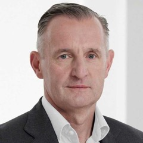 Peter Weinelt | Generaldirektor Wiener Stadtwerke — ranghöchster Teilnehmer aus der Wirtschaft |
| ABArnulf Blattl | Vorstand Wiener Gesundheitsverbund |
| Wolfgang Ebner | CDO des Bundes, Bundeskanzleramt — Keynote Tag 1 |
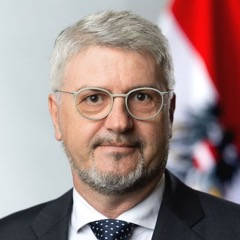 Peter Vorhofer | Berater der Bundesregierung für nationale Sicherheit und Resilienz, BKA |
| Annika Zelenka | Country CIO DHL Express Austria |
| Thomas Strieder | VP Group IT Security & Operations, ANDRITZ |
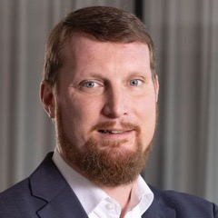 Alexander Hochmeier | VP IT Technology & Security, FACC |
| JTJörg Tekülve | COO Commerzbank Wien |
| Andreas Mauczka | CDO APA |
| Vanessa Langhammer | Head of Digitalization, Rail Cargo Austria |
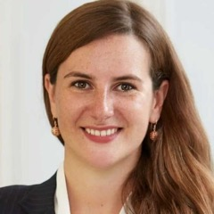 Jeannette Gorzala | CEO ACT AI NOW, stv. Vorsitzende KI-Beirat der Republik |
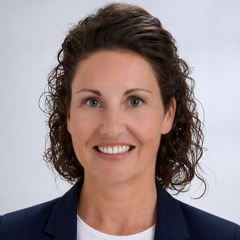 Isolde Perndl | Kaufm. Geschäftsführung FH OÖ Management — Bezug zu deinem Lehrauftrag Steyr |
| Martin Szelgrad | Chefredakteur Report Verlag — Presse, Interview anbieten |
| Helga Krismer | Klubobfrau Grüne NÖ |
| Stefan Gara | NEOS Wien, Landtagsabgeordneter |
Pensionsversicherung im Saal — 8 Personen
Österreichs Gegenstück zur DRV. Dein Material vom DRV-KI-Tag (03.11.) passt direkt: DRV-Seite.
| MKMichaela Kober | PVA Hauptstelle Wien, Juristin |
| PWPatricia Wagner | PVA Hauptstelle Wien, eigenverantwortliche Bearbeiterin |
| BBBernhard Böck | BVAEB, Abteilungsleiter |
| AKAnna Kogler | BVAEB, Abteilungsleiter-Stv. |
| HHHelmut Hacker | BVAEB, MedVCC Teamleitung Stv. |
| TOThomas Oplesch | BVAEB, MedVCC Betrieb |
| TFThomas Fröschl | BVAEB, Systemtechniker |
| CWClemens Wagner | BVAEB |
| Für den Vortrag |
|
Was das für den Vortrag heißt
- Publikum überwiegend angestellte IT-Leitung in Konzernen und Verwaltung — „Wiederentdeckung des Unternehmertums“ als Intrapreneurship formulieren, nicht nur Gründer.
- Pensionsversicherung mit 8 Personen da (PVA, BVAEB) — DRV-Material vom 03.11. einbauen.
- Vormittags laufen KI-Haftung (Winklbauer), Agentic AI (Miba), Deepfakes (Hatahet) — nicht wiederholen, darauf verweisen.
- Kleine Teams schlagen große: STANDARD-Beispiel von Krejca liefert lokalen Beleg.
Kontakte imh
| SRStephan Rudolf | Conference Director imh · stephan.rudolf@imh.at · +43 1 891 59 640 |
| NBNina Bennewitz | Teamleitung Eventkoordination imh · nina.bennewitz@imh.at · +43 1 891 59 448 |
Programm Forum IT · Rabattcode für Gäste: 11350REF10 (10 %)
Auftragshistorie
- 17.07.2026 Anfrage Rudolf nach Telefonat, Platzhalter „Was machen wir aus der KI?“
- 02.09.2026 „Forum IT: Wichtige Info“ von Rudolf
- 22.10.2026 Speaker-Mail Bennewitz: Adresse, Technik, Frist 11.11.
- 10.11.2026 Teilnehmerliste
- 15.11.2026 Ticket-Mail „Ihre Teilnahme“
Recherche: Fallbeispiele für dieses Publikum
Pro Fall: Inhaltsanalyse der Quelle, dann warum es ein Skandal bzw. ein passendes Beispiel ist. Screenshot = ganze Seite, fremdsprachige Seiten ins Deutsche übersetzt. Vorschau zeigt den oberen Teil, Klick öffnet die ganze Seite; ‹ › oder Pfeiltasten schalten weiter.
Klarna — erst 700 Stellen durch Chatbot, dann doch wieder Menschen
Was in der Quelle steht:
- 2024: Klarna verkündet, ein Chatbot erledige die Arbeit von 700 Angestellten im Kundenservice; Einstellungsstopp.
- Mai 2025: CEO Sebastian Siemiatkowski rudert zurück — beim Kostensparen mit KI sei man zu weit gegangen (laut Bloomberg).
- Neuer Kurs: In die „Qualität des menschlichen Supports“ investieren; Kunden sollen immer einen echten Menschen erreichen können.
- Neue Kräfte im „Uber-Setup“: Studierende und Menschen vom Land, flexibel und remote. 93 Mio. Kunden weltweit.
Warum das passt: Der Vorzeige-Fall für „KI ersetzt den Service-Desk“ ist gekippt — beim Unternehmen selbst. Für Service-Desk-Leiter und Versicherungen mit Millionen Kunden der Beleg für Christophs These: Wenn alles künstlich wird, ist der Mensch am Telefon das Produkt.
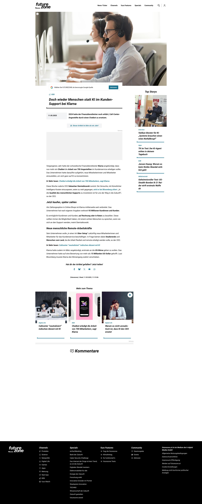
Klick: ganze SeiteCommonwealth Bank — Voicebot ersetzt 45 Stellen, Bank entschuldigt sich
Was in der Quelle steht:
- Ende Juli 2025: Nach Einführung eines KI-Sprachbots zur Priorisierung eingehender Anrufe stellt Australiens CBA 45 Kundendienststellen zur Disposition.
- 21.08.2025, nach drei Wochen: Rücknahme. Bank-Sprecher: Die Einschätzung habe nicht alle relevanten geschäftlichen Aspekte berücksichtigt — „dieser Fehler“.
- Entschuldigung bei den Betroffenen; Wahl zwischen Weiterarbeit, Versetzung oder Austritt; interne Prozesse werden überprüft.
- Gewerkschaft FSU: „massiver Sieg für die Arbeitnehmer“ — der Kampf sei aber nicht vorbei.
Warum das ein Skandal ist: Größte Bank Australiens streicht Stellen auf Basis einer Bot-Kalkulation und muss öffentlich „Fehler“ einräumen. Für CIOs und Juristen im Saal: Personalentscheidungen auf KI-Annahmen sind angreifbar — und der Reputationsschaden bleibt beim Konzern.
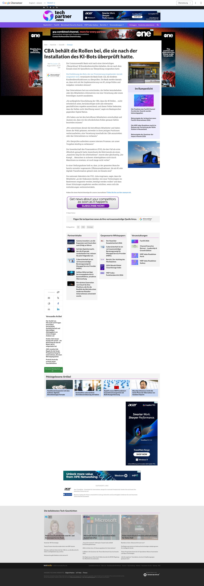
Klick: ganze SeiteFörsäkringskassan, Schweden — KI-Risikoprofil der Sozialversicherung
Was in der Quelle steht:
- Seit 2013 vergibt die schwedische Sozialversicherungsanstalt per maschinellem Lernen Risikowerte; hohe Werte lösen Betrugsermittlungen aus.
- Recherche Lighthouse Reports/Svenska Dagbladet: Frauen, Menschen mit Migrationshintergrund, Geringverdiener und Menschen ohne Hochschulabschluss werden überproportional markiert.
- Warnungen ignoriert: Aufsicht ISF stellte schon 2018 fehlende Gleichbehandlung fest; ein Datenschutzbeauftragter warnte 2020 vor fehlender Rechtsgrundlage.
- Amnesty Tech, 27.11.2024: Das System gleiche einer „Hexenjagd“; Forderung nach sofortiger Einstellung, Verweis auf EU-KI-Verordnung.
Warum das ein Skandal ist: Das ist exakt die Branche im Saal: eine Sozialversicherung, die Versicherte algorithmisch verdächtigt. Zwölf Jahre Betrieb, interne Warnungen, am Ende öffentlicher Pranger. Für PVA und BVAEB der Spiegel: Effizienz ohne Beziehung zerstört Vertrauen in die Institution.
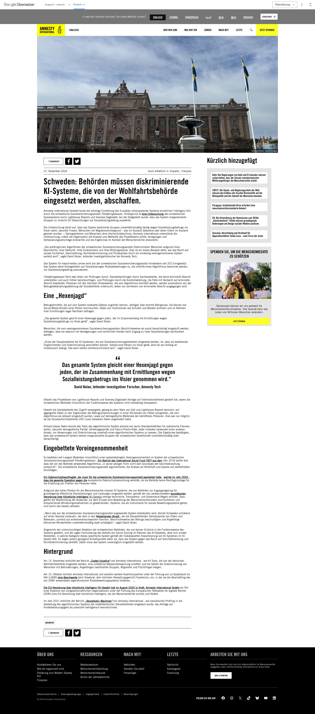
Klick: ganze SeiteMIT-Studie — 95 Prozent der GenAI-Piloten bringen keinen Umsatz
Was in der Quelle steht:
- Studie „The GenAI Divide: State of AI in Business 2025“ (MIT): nur etwa 5 % der KI-Piloten treiben den Umsatz; Basis 150 Interviews, 350 Befragte, 300 Implementierungen.
- Hauptautor Aditya Challapally: Einige große Unternehmen und „jüngere Startups“ sind erfolgreich — Startups von null auf 20 Mio. Dollar Umsatz in einem Jahr.
- Problem nicht die Modelle, sondern die „Lernlücke“ in Tools und Unternehmen. Gekaufte Lösungen gelingen in ca. 67 %, Eigenentwicklungen nur in einem Drittel.
- Mehr als die Hälfte der Budgets geht in Vertrieb und Marketing; größte Rendite liegt im Back-Office.
Warum das passt: Der Großkonzern scheitert nicht an der Technik, sondern an sich selbst — die Kleinen mit Fokus gewinnen. Für IT-Leiter mit Eigenbau-Plattformen unangenehm: Eigenentwicklungen schneiden deutlich schlechter ab. Hinweis: Die 95-%-Zahl ist methodisch umstritten.
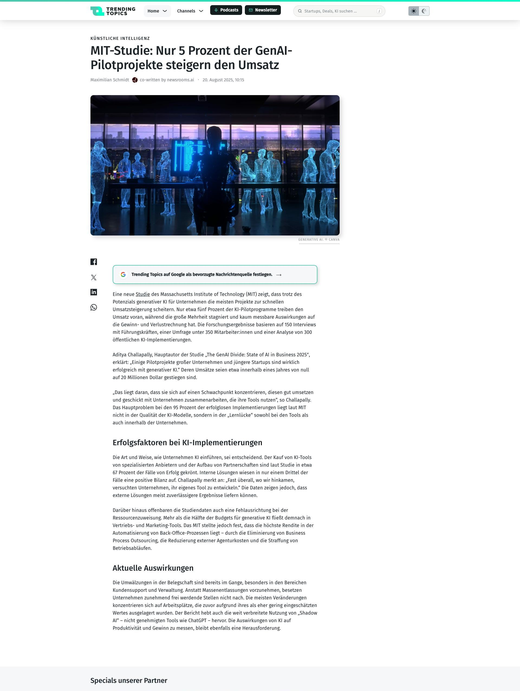
Klick: ganze SeiteBase44 — sechs Monate, ein Gründer, 80 Mio. Dollar
Was in der Quelle steht:
- 18.06.2025: Wix kauft Base44 vom israelischen Entwickler Maor Shlomo (31) für 80 Mio. US-Dollar in bar.
- Eigenfinanziert, sechs Monate alt; 250.000 Nutzer, im Mai 189.000 Dollar Gewinn.
- Nicht ganz allein: acht Angestellte, die gemeinsam 25 Mio. Dollar „Bindungsprämie“ erhalten.
- Wachstum fast nur durch Mundpropaganda: Shlomo teilte seine Entwicklungsgeschichte offen auf LinkedIn und X.
- Hinweis: Google übersetzt „Vibe-Coding“ im Titel fälschlich als „Musik-Applikationen“.
Warum das passt: Der Konzern kauft, was ein Einzelner mit KI in einem halben Jahr gebaut hat — und das Wachstum kam über persönliche Beziehung zur Community, nicht über Marketingbudget. Christophs These in Reinform: KI stärkt den unternehmerischen Menschen.
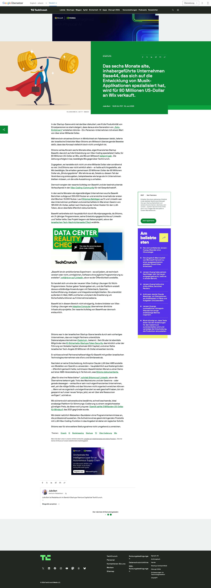
Klick: ganze SeiteAnysphere/Cursor — vier MIT-Absolventen, 9 Mrd. Dollar Bewertung
Was in der Quelle steht:
- Gegründet 2022 von vier MIT-Absolventen; Produkt: KI-Code-Editor Cursor.
- Jährlich wiederkehrender Umsatz Januar bis April 2025 von ca. 100 auf 200 Mio. Dollar verdoppelt.
- 900-Mio.-Dollar-Runde unter Führung von Thrive Capital, Bewertung ca. 9 Mrd. Dollar; Kunden u. a. Stripe, OpenAI, Spotify.
- Laut Artikel fast 1 Mrd. Zeilen funktionierenden Codes pro Tag; Zweifel an der Nachhaltigkeit der KI-Umsätze bleiben.
Warum das passt: Vier junge Gründer bauen das Werkzeug, mit dem Konzern-IT heute programmiert. Für Rechenzentrums- und IT-Leiter die Machtverschiebung: Die Software für die eigene Abteilung kommt nicht mehr vom Großanbieter, sondern von einem Start-up mit Unternehmergeist.
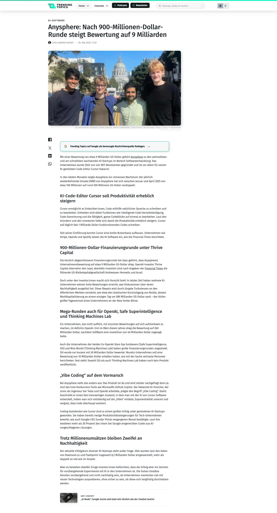
Klick: ganze Seite